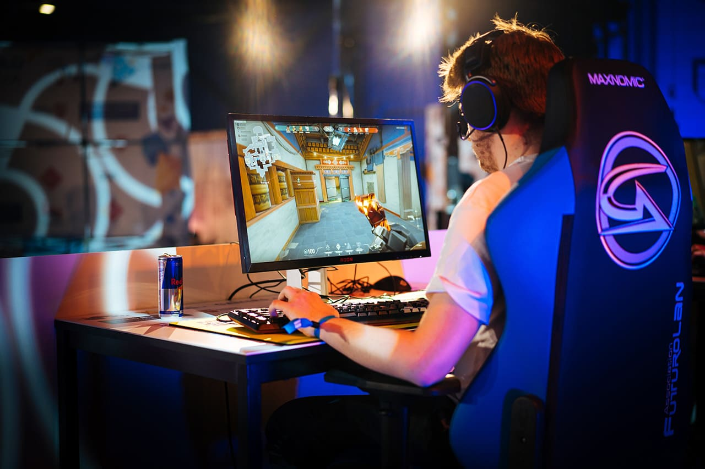
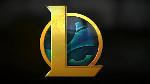
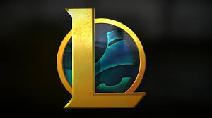
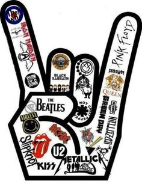

Durante meus periodos de descanso, no caso os fins de semana, costumo sempre jogar jogos, em especial o Valorant:
Seu estilo de jogo se baseia em uma mistura de elementos dos jogos Counter Strike Global Offensive e League of Legends.
 

Onde juntando alguns dos elementos destes jogos, criam-se um Fps tático com habilidades nunca vistas antes.
Estas habilidades são únicas e exclusivas de cada personagem, sendo assim cada personagem tento uma mecânica de jogo diferente que complementa, auxilia e facilita o decorrer das partidas.

Como ja havia listado acima, ficar o dia todo apenas sentado na frente de um computador vai se tornando entediante, então nos momentos que eu canso de jogar eu toco violão.
Comecei a tocar este instrumento para futuramente evoluir e comprar uma guitarra.

O motivo principal para eu demonstrar interesse nestes dois instrumentos é a influência musical,sendo o meu estilo de música favorito o Rock, e boa parte de seus derivados como:
Por conta de bandas como Pink Floyd, Arctic Monkeys, Avenged Sevenfold, Slipknot e Red Hot Chilli Peppers, que me "mostraram" esse estilo de musica que tanto me apaixonei e me apaixono sempre que ouço, fizeram eu ter tanto interesse no violão e guitarra.
